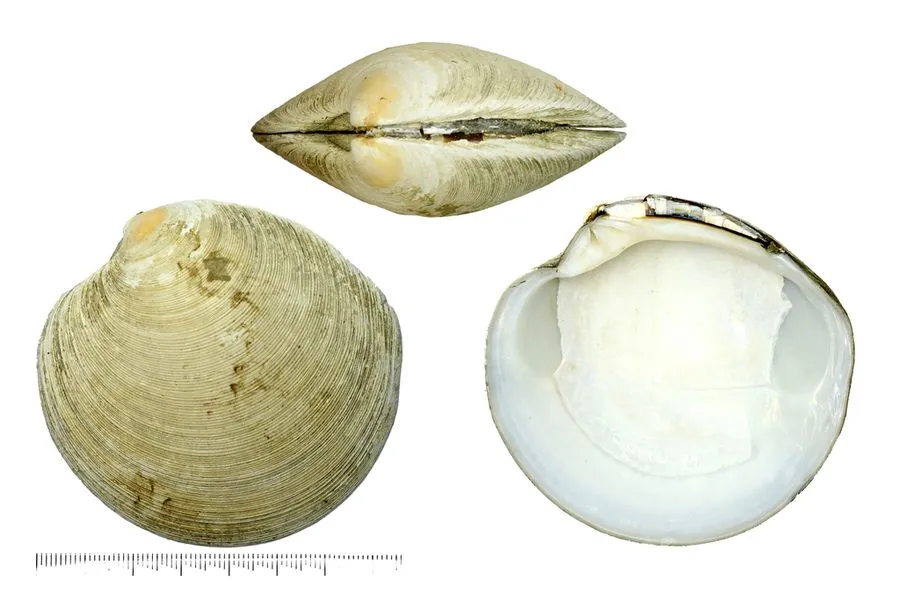

软体动物 · 动物界
镜蛤 Dosinia japonica

壳面光滑如镜的圆形蛤蜊，壳质厚重，栖息在沙质海底，中国沿海常见，肉可食用，壳可作工艺品原料。
- 分类
- 门软体动物门纲双壳纲目帘蛤目科帘蛤科属镜蛤属
- 栖息环境
- 潮间带下区至水深数十米的沙质和沙泥质海底
- 地理分布
- 西北太平洋，包括中国南北沿海、日本和朝鲜半岛
- 保护级别
- 尚无保护级别；资源受底拖网和采捕影响
物种志
镜蛤的贝壳呈圆形，壳长约五至七厘米，壳质厚重，两壳扁平，壳面光滑如镜，呈黄白至浅褐色，有细密的同心生长纹，壳顶低平，略偏向前方，壳缘光滑，壳内面白色，铰合部有主齿。足部侧扁，水管较长，末端有触手。它靠足部在沙中掘穴，滤食时把水管伸出沙面。壳面光洁，反光如镜，镜蛤之名由此而来。
它分布于西北太平洋，包括中国南北沿海、日本和朝鲜半岛，栖息在潮间带下区至水深数十米的沙质和沙泥质海底，喜欢水质清澈、水流平缓的沙底。它以硅藻和有机碎屑为食，靠水管滤食，生长较慢。繁殖期在夏季，雌雄异体，幼虫经浮游阶段后附着到沙底。镜蛤肉味鲜美，是沿海常见的食用贝类，壳形圆整、壳面光洁，也常被磨制成工艺品和装饰品。目前尚无保护级别，资源受底拖网和采捕影响。
形态与习性
- 食性滤食硅藻和有机碎屑
- 壳长约五至七厘米，壳形圆而扁平
- 壳面光滑如镜，黄白至浅褐色
- 栖息深度潮间带下区至水深数十米的沙底
- 繁殖夏季繁殖，幼虫经浮游期后附着沙底
- 利用肉可食，壳可磨制工艺品和装饰品
趣味知识
- 镜蛤的壳面打磨般光滑，反光像一面小镜子，名字就是这么来的。
- 它的两壳很扁，闭合后像一枚圆润的棋子。
- 镜蛤壳质厚、色泽均匀，常被用来制作纽扣和镶嵌装饰。